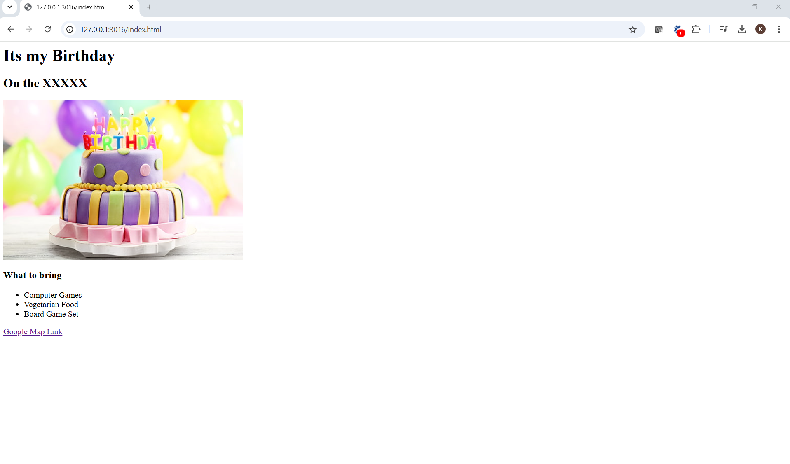
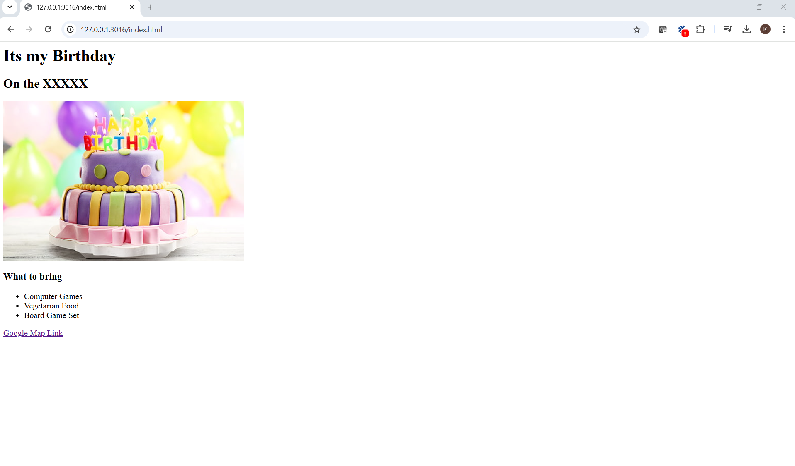

I'm a QA tester with Business Domain knowledge but I yearn to attain both the functional and technical skilset.
Possessing both the business functional and technical skilset isn't an easy task and therefore I would like to attain this "technical" skilset which I was lacking due to the complexity.
This web page is done by hardcoding the HTML syntax code via VS Code application.

My goal is to attain the following skilset
- Selenium Automation Testing - Achieved
- Webpage design - In Progress
- Leveraging of cut edge technology with Node JS to design website - Not Started
- Form data to capture the user input data to the Postgres SQL DB
- Finally, leverage on the same Selenium Framework design that I have completed, to perform test automation on my own webpage that I have created.
 

About Me
Contact Me